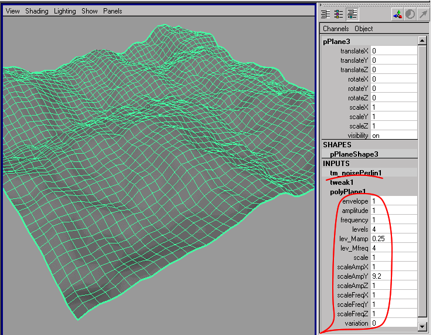

Perlin Noise Deformer.

It is a standart deformer node, witch offsets control points of deformable objects by Ken Perlin noise algorithm.
"amlitude" - the amplitude of the noise.
"frequency" - the frequency of the noise.
"levels" - the quantity of noise algorithms.
"lev_Mamp" - amplitude multiplier of the next noise level.
"lev_Mfreq" - frequency multiplier of the next noise level.
"scaleAmpX", "scaleAmpY", "scaleAmpZ" - axis multipliers of the noise amplitude.
"scaleFreqX", "scaleFreqY", "scaleFreqZ" - axis multipliers of the noise frequency.
"variation" - the noise variation - the fourth dimension of the Perlin Noise.